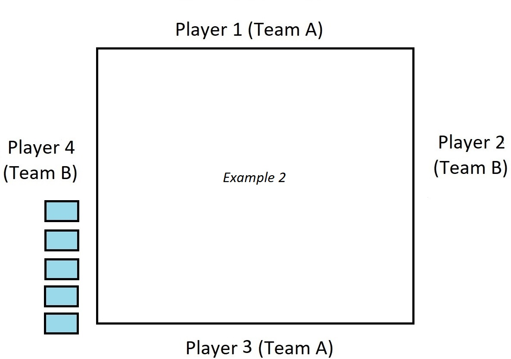

- Start off by removing cards with a value of 8 and under (2, 3, 4, 5, 6, 7, & 8) and the two Jokers from a standard 52 card deck.
- Shuffle the remaining cards (there should be 24) and deal 5 cards to each player. These are dealt in groups of 2 and 3 cards.
- After 5 cards have been dealt to each player, the next card is placed face up on the remaining cards (there should be 4). The stack of remaining cards is commonly referred to as the "kitty".
- The suit of that card (heart , spade ♠, diamond , or club ♣) will be the candidate for trump. Starting on the dealer's left, each player has a chance to choose that card's suit as trump or pass.
- If a player selects the card as trump, the dealer will pick up the card, remove a card from their hand, and place it in the kitty. Only the dealer will know which card was disposed of.
- If each player (including the dealer) chooses not to select the card suit for trump, the dealer will turn the card over on the pile. The players, in the same order, will have the chance to select any other suit for trump. If the option is passed by all players (including the dealer), then the cards will be returned to the deck and player to the left will shuffle and deal the next hand.
- The Jack of the trump suit is known as the right bower (bar), and is the highest valued card in the game. The Jack that has the same color as the trump suit is known as the left bower (bar), and is the second highest valued card. Example: Hearts is trump, so the Jack of Hearts (J) is the right bower and the Jack of Diamonds (J) is the left bower.
- Scores are typically tracked using lower-ranking cards not used for play, usually the 6 and 4 (one team uses a red suit, the other uses a black suit).
- The player to the dealer's left will start the hand. They will place a card on the table, and the other players will select a card and place it in clock-wise order. Players must follow suit if they have the lead suit in their hand (i.e. if a heart is played first, then a player must select a heart if they have one in their hand). If the lead card is the trump suit, each player must place a card of the same suit, which includes the left bower. If the player has neither, then they can place any other card. Trump can be lead in the first round, though it is not recommended.
- The player that plays the highest valued card wins the trick (turn). The team that earns 3 or more tricks wins the hand.
- The trump card values follow this order: right bower, left bower, Ace, King, Queen, 10, 9, and other card values follow the ranking: A, K, Q, J, 10, 9. A trump card will beat any non-trump card, regardless of play order.
- If the pair that selected the trump suit wins 3 tricks, that team will gain 1 point. If that pair wins all 5 tricks, they will receive 2 points.
- If the pair that did not select trump wins 3 tricks, they will receive 2 points. This is called "getting Euchered".
- When a player selects trump, they can declare that hey wish to "go alone", meaning their partner is not allowed to play that hand in an attempt to earn 5 points.
- Some players allow for "Partner's Best", where the team that is going alone can trade 1 card from each other's hand while others do not. The preferred style of play should be established prior to the start of the game.
- If the team that went alone can win all 5 tricks, that team earns 4 points. If only 3 or 4 tricks are won, the team only gets 1 point. If the opposing team scores 3 or more tricks, they will receive 2 points.

- If Team A made trump in Example 1, Team B would gain 2 points for Euchering Team A.
- If Team B made trump in Example 1, Team B would gain 1 point.
- If either player from Team A made trump in Example 2 and went alone, Team B would still only gain 2 points for Euchering Team A.
- If Team B made trump in Example 2 and Player 4 went alone, Team B would have scored 4 points.